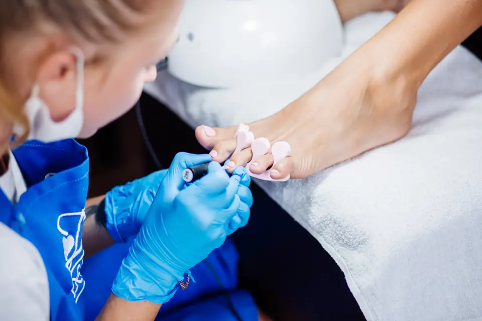
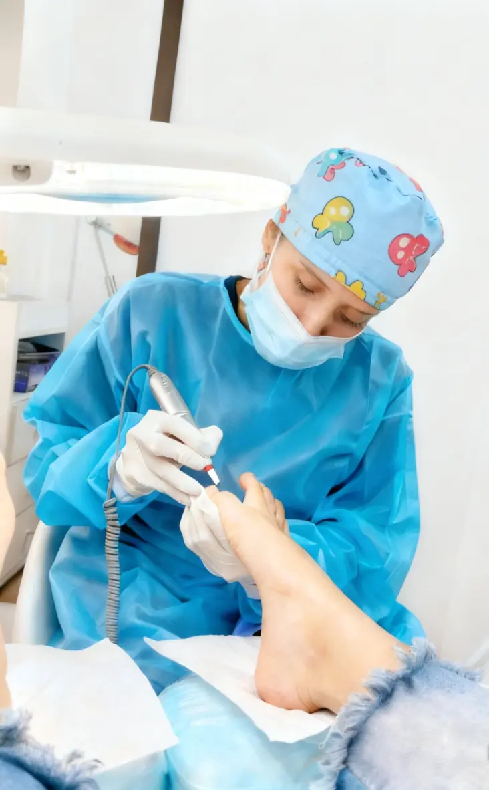
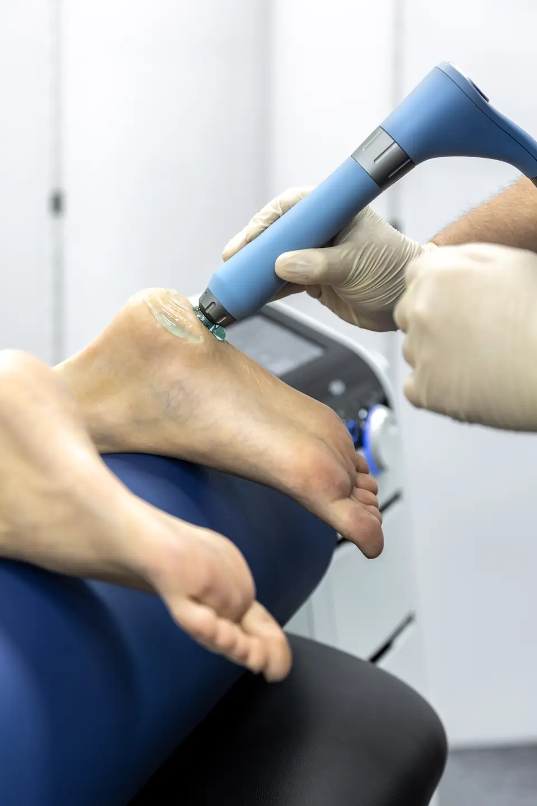
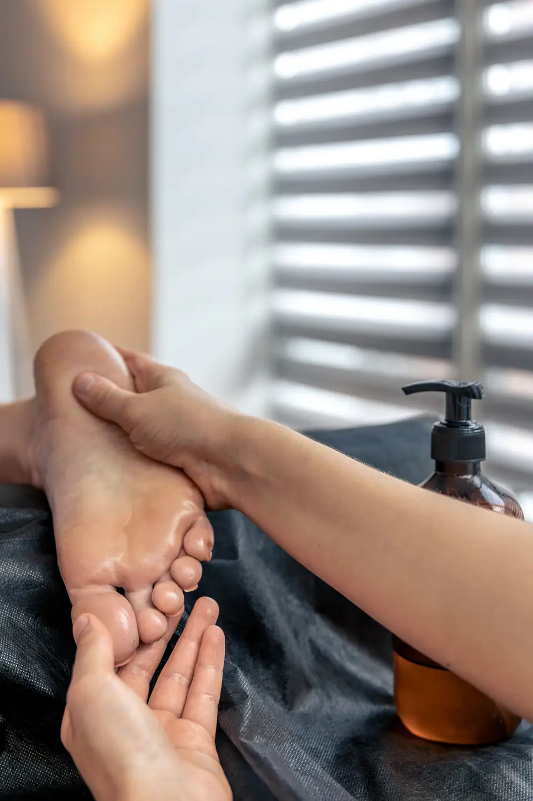
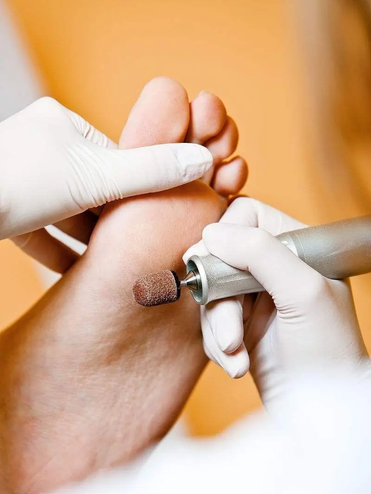

Podólogo en Santa Marta
Atención Profesional Completa y Bienestar Real para Tus Pies
"Cada paso importa, así que empieza ya a darle a tus pies un cuidado profesional"
Uña encarnada en una citaOnicectomía parcial$163.000 por canalFenolización$500.000 por canalEscribir por WhatsApp
Nuestros Servicios de Podología en Santa Marta
Te brindamos una atención podológica integral que se centra en cuidar tus pies de forma profesional y en prevenir sus problemas, y planeamos cada tratamiento pensando en tu salud, tu comodidad y un bienestar duradero.
Clínica de Podología en Santa Marta
En nuestra sede en Santa Marta realizamos procedimientos especializados para tratar desde las molestias más comunes hasta los casos más delicados de los pies, con tecnología avanzada y protocolos de bioseguridad estrictos pensados para cuidarte por completo.
Ver Servicios

Spa Médico para Pies en Santa Marta
Unimos técnicas terapéuticas con un spa de alto nivel para que vivas una sesión especial de cuidado y relajación, donde la podología profesional y el bienestar van de la mano en un ambiente completamente tranquilo.
Ver ServiciosSalón de Masaje para Pies en Santa Marta
Nos especializamos en masajes podales que liberan la tensión acumulada, estimulan la circulación de la sangre y mejoran tu bienestar general, con técnicas precisas que, al cuidar tus pies, hacen que notes los beneficios en todo el cuerpo.
Ver Servicios
Bioseguridad estricta
En cada procedimiento trabajamos con instrumental esterilizado y protocolos clínicos estrictos, para que te sientas en total confianza.
Manos verdaderamente expertas
Te atendemos de forma profesional y personalizada, y antes de cada tratamiento hacemos un diagnóstico detallado.
Atención todos los días
Atendemos de lunes a domingo en Santa Marta, separas tu cita por WhatsApp con horarios flexibles y notas alivio desde la primera sesión.

Encuéntranos en Santa Marta
Centro de Podología Pedi-Spa en Santa Marta Carrera 17 #24A-40, Santa Marta, Magdalena
Atendemos en el consultorio y también a domicilio, todos los días de 8:00 AM a 6:00 PM.
Separa hoy tu valoración en Pedi-Spa, Santa Marta, y empieza a sentir alivio desde la primera sesión.